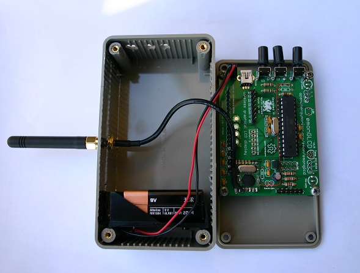
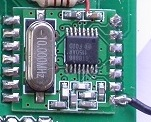

Hi,
Quick question just.
The RF antenna on my Nanode RF broke off. Will it be okay if I solder it back on or is this a going to be problem because it needs to be a certain length?
Thanks in advance.
Darren
Archived Forum |
|
RF antenna broke offSubmitted by Guest on Thu, 16/05/2013 - 17:41Hi,
Quick question just.
The RF antenna on my Nanode RF broke off. Will it be okay if I solder it back on or is this a going to be problem because it needs to be a certain length?
Thanks in advance.
Darren » |
Re: RF antenna broke off
IMHO it's not a problem as long as you don't lose a lot of length. i.e. if it 'snapped' right on the solder joint, just pare back the insulation and re solder. The goal is to be as close to resonance at the desired frequency as possible, so as you move away from the optimal length the antenna will become more 'out of tune' so to speak...
In any case, you'll know immediately if you are receiving all your inputs correctly. I don't think it'll be a proble.
Eamonn
Re: RF antenna broke off
No, a few millimetres is not a problem. After a couple more times (868 MHz) or a handful more times (433 MHz) I'd wonder whether it's worth getting a new piece of wire. As Eamonn says, if you are on the limit of range, it is more critical; but otherwise, shortening it a little (maybe up to 20%) shouldn't have any ill effect.
Re: RF antenna broke off
Is there a better arrangement that just the standard length of solid-core wire? I've always felt this kind of aerial to be a safety hazzard, far too easy to poke one's eyes out. Putting some red tape on the top as a warning flag seems a poor solution.
To reduce this risk, I've thought about forming a small loop at the exposed end, but have not yet tried to so do. I wonder how this would affect the performance?
When first playing around with RFM12B chips, I seemed to get better performance when the aerial length was doubled, hence more exposed wire. Maybe I should try the standard quarter-wave version again. As this is what's supplied by the OEM shop, I presume this is what most people are using.
Re: RF antenna broke off
As my emonTx is handled mercilessly, I gave up and substituted multistrand flexible wire instead. That should last a bit longer. If I use the rf, it's only over a distance of less than a metre usually, so quite probably no aerial would be good enough! Adding a loop to the end would increase capacitance a little, but should have little overall effect.
Once permanently installed, solid wire would be preferable as it will allow the aerials to be positioned to best effect.
Look up "1/4 wave antenna radiation pattern".
Re: RF antenna broke off
In my home 1/2 wave antennas perform better ( 868Mhz setup ), just a thought
Re: RF antenna broke off
These graphs probably explain why: http://www.moonraker.com.au/techni/patterns2.htm
If the other end of the link is in the direction of the 30° peak in the radiation pattern, then you have some useful gain. But if the wire points straight at the other end, then 1/8th wavelength is the better choice.
[I wish I understood antenna theory.]
Re: RF antenna broke off
Some cheap alternatives here (the last three).
http://www.simplesolutions-uk.com/products/antenna/rf-antenna/868mhz-ant...
Or this site gives the details of the sizes
required to maybe make your own up.
http://www.radiometrix.com/uhf-helical-coil
Re: RF antenna broke off
Thanks ptram2, those links look really useful.
Re: RF antenna broke off
Hello Robert,
While not critical in regards to damaging any of the transmitter electronics, shortening the antenna by 20% would make it resonant at approximately 540Mhz. Why is that significant? That far off resonance, the antenna exhibits a non-optimal VSWR. (voltage standing wave ratio) VSWR is a "double edged sword." Not only does it reduce the effective output of the transmitter, but it reduces the strength of the signal delivered to the receiver as well. So in effect, you take a "double hit" with a high SWR. (considered for practical purposes, to be a ratio greater than 1.5:1) Wavelength (and therefore, antenna length) decreases as frequency increases, which means an error of just 5% at 433Mhz, will be approximately 10% at 868Mhz and more than 10% at 915Mhz. (A 5% error at 433Mhz is approximately 16.5mm.) The further from resonance an antenna is, the poorer it performs, both transmitting AND receiving. So, if maximum range is needed, or the nodes are separated by one or more walls in a building, keeping the antenna as close to 1/4 wave as possible will ensure the nodes have the best chance for solid communication.
regards,
Bill Thomson KR6K
Re: RF antenna broke off
Hello again Robert,
Lots of good info at the link you posted. However, the radiation patterns shown are for horizontally oriented (polarized) antennas, operating in the HF portion of the radio spectrum. (from 3 to 30Mhz) The radiation pattern from the 1/4 wave antenna used here looks more like a somewhat flattened toroid, or a semi-sphere. Going on the premise the impedance the transmitter wants to "see" is 50 ohms, a 1/8th wave antenna would not present the proper load to the transmitter module, and poor transmit and receive performance and hence shortened range, will be the result. Since we're dealing with low transmitter output levels, we need all the "help" we can get to ensure good solid node communication, especially if distance and/or solid objects (e.g. walls) are part of the picture.
regards,
Bill Thomson KR6K
Re: RF antenna broke off
Calypso_Rae,
If you keep the overall length of the antenna as close to original length as possible, (assuming you're replacing the old antenna with a new one) forming a small loop in the end won't be an issue.
regards,
Bill Thomson KR6K
Re: RF antenna broke off
Thanks for the guidance Bill. For most of us, I feel sure that aerials are a Black Art.
On the first of the Building Block pages for Networking using the RFM12B, the aerial dimensions are given as:
433 1/4 wave = 164.7mm
433 1/2 wave = 329.4mm
433 full wave = 692.7mm
868 1/4 wave = 82.2mm
868 1/2 wave = 164.3mm
868 full wave = 345.5mm
915 1/4 wave = 77.9mm
915 1/2 wave = 155.9mm
915 full wave = 327.8mm
In each case, the 1/4 and 1/2 wave values appear to be in the ratio of 1:2, but not the full-wave value. I wonder why this might be.
Am I right in thinking that the aerial may be connected to the RFM12B via a short length of coax which does not affect the aerial's performance (because of the screening, which I presume needs to be earthed).
Regards, Robin
Re: RF antenna broke off
http://wireless.ictp.it/school_2007/lectures/rob/diy-antennas/index.html...
Hi Robin,
Yes, the aerial could be connected via a short piece of coaxial cable. The screen will need to be earthed, but it needs a radio frequency (RF) earth, as opposed to a direct current (DC) earth. (which might not be easy to do, given the physical construction of the RFM12B module.) The screen connection should be kept as close to the center conductor connection as possible. RF signals sent through coaxial cable decrease in level in direct proportion to the length of the cable. The problem gets worse as the frequency increases. The same piece of coaxial cable that has a given amount of loss at 433Mhz will exhibit more loss at 868Mhz, and a bit more at 915Mhz. This too, is a double edged sword. That is to say, it affects transmitter output, as well as the signal the aerial delivers to the receiver (decreasing them both). Hence, make the cable as short as possible. The aerial itself will need a ground plane. The ground plane can consist of a sheet of metal on which the aerial is mounted perpendicular to the sheet's surface, or even something as simple as four wires mounted in the same plane the sheet metal would otherwise occupy. Picture an inverted upper case "T" with two additional wires in the same plane as the bar at the bottom of the "T" but rotated 90 degrees. As with the RFM12B end of the cable, the screen connection and the center conductor connections should be kept as close together as possible. Compared to the simple piece of wire aerial, there should be a performance improvement. The whole thing sounds complicated, but is actually fairly easy to build. The important thing with aerials is to make sure the dimensions are as close to specification (determined by frequency) as possible.
Here's a link to some homemade wi-fi antennas that should help visualize a ground plane antenna:
http://wireless.ictp.it/school_2007/lectures/rob/diy-antennas/index.html
Keep in mind, the aerial shown is designed to operate at 2.4GHz. It CAN, however, be scaled to work at 433, 868 or 915Mhz.
Regards,
Bill Thomson KR6K
Re: RF antenna broke off
Thanks Bill, that explanation all makes good sense.
To start with, I just soldered a standard 1/4 wave length of wire to the ANT pad of each of my RFM12B chips. With various other wires looped around my prototype lash-up, I was not expecting error-free performance. Finding that some errors were occurring, I soldered on extra lengths of wire to make them each 1/2 wave, basically to extend them into some clearer space. This modification seemed to improve the performance, and I've not really thought about it again.
Having wired the central core of the coax to the ANT pin of the RFM12B, I intend to wire the screen to the GND pin which is 4mm away, making sure that it doesn't contact the 3V pin that's in between. Hope that's close enough.
At the remote end, I will be connecting the coax to a bulkhead connector to which a 1/4 wave whip aerial can be plugged. Extending the screen as a groundplane using wires taped to the underside of the box lid should be easy to do and non-visible from the outside.
Anyone know of a suitable source of mini 50 Ohm coax?
Re: RF antenna broke off
Excellent choice of connector, Robin. SMA connectors are used well up into the microwave portion of the radio spectrum. They're well suited for what you're doing. RG-174 coax cable, while not the best to use in term of loss, will make connecting to the RFM12B easier, as it's quite small, only 2.8mm in diameter, and very flexible. RG-174 is quite lossy at the frequencies we're dealing with here, but if the length is kept short, say, 200mm or less, the loss will be very small and won't be a problem. If I'm reading your description correctly (of the screen earth point you used) it sounds like its a DC earth. Although not optimum as an RF earth, it may be your only choice, and it may work well enough to get the job done. Sometimes you just have to use what you have ;-)
The description on the web page you reference for the aerial says the aerial needs a ground plane. A metallic disk, 82mm in diameter will do the job, but the ground plane doesn't have to have a circular shape. An 82mm x 82mm square will work too. The ground plane can be made from copper, aluminum, brass, steel, whatever you have access to. As long as it's metallic and conducts electricity reasonably well, it'll work.
The aerial won't perform well without a ground plane, so you'll definitely want to use one.
Farnell has RG-174 at £0.75 per metre. I'm in the USA, so don't know about minimum order and the like, but if you do a search for RG-174 coaxial cable, you shouldn't have any problems finding a source.
BT
Re: RF antenna broke off
Robin, it would be better to use an SMA bulkhead connector that properly terminates the RG-174 cable as the impedance mismatch on the one you have linked will be another source of power loss. These connectors are very tricky and time consuming to assemble though so it's easier to use a pre-assembled cable like this one (you can just cut the connector off the other end). You will need an aerial with a normal SMA connector though as the one you have chosen has a reverse SMA connector, something like this.
Oh, and 73s Bill from G6TIX (now dormant).
Re: RF antenna broke off
I've already ordered those other components, Martin, so will see how they behave in due course. With only a few inches of cable in use, I have no idea how important it will be to match the system's impedance. The arrangement that I'm intending to use surely can't be any worse than just the standard length of wire.
Alongside the pair of Simple Sketches for RFM12B on the Building Blocks page, I think it would be really helpful if there was some info about suitable aerials for use with these devices. At present, there is precious little guidance about this for the newby user.
Re: RF antenna broke off
Hello Martin,
GREAT idea regarding the pre-made cable. Don't know why I didn't think of that. I've been in the electronics field so long, I guess I'm used to assembling that kind of stuff. But as you mentioned, it can indeed, be difficult to get one assembled correctly.
I rechecked the link in Robin's post, the bulkhead connector *is* the RP type, so he's got a match between connector and aerial, but I still like your idea of the pre-made cable much better.
73 OM,
Bill KR6K
Re: RF antenna broke off
Guys, when you measure the antenna length, do you take in consideration the few mm-s of PCB track between the RFM12b pad and the antenna pad? It may be too much to consider, but I am interested to hear opinions.
Re: RF antenna broke off
The aerials that I'd ordered from Simple Solutions turned out to be too pricey. They have a minimum order of £20 and a shipping fee of £8.50. Maybe I'll try the alternative type that you've suggested Martin, thanks for the link. Cut in half, a suitable pre-made cable could provide a good connection to two aerials.
Farnell also have a £20 min order fee which is a real pain for small-time buyers. Thankfully, Maplin also do a 50 Ohm mini coax with a shipping fee of just £2.99.
Re: RF antenna broke off
I've got some from ebay (ChinaRF)
http://www.ebay.ie/itm/10pcs-824-960Mhz-GSM-Antenna-2-DBi-SMA-Plug-Straight-/290585010057?pt=UK_Computing_Boosters_Extenders_Antennas&hash=item43a8375f89
for a boiler run time monitor I've been working on. Might be worth a shot. I'll be posting some photos and code shortly btw.
Eamonn
Re: RF antenna broke off
Thanks, Eamonn.
I wasn't intending to go into volume production, but sometimes these bulk buys do seem to be the best way to go.
Re: RF antenna broke off
Generally, no. But pc board traces longer than ~80 mm (at 433 Mhz) can act more like an aerial than a feed line. More so as their length approaches 1/4 wave and especially so, if a ground plane is present. At 868 and 915 Mhz, one quarter wave is approximately 80 mm, so traces more than ~40 mm long might be an issue. Otherwise, tracks only a few mm long are usually considered part of the RF output port.
Regards, Bill KR6K
Re: RF antenna broke off
That's good to know, thanks
Re: RF antenna broke off
hi robin,
is it possible to take some pictures of your coax connections at both the rfm12b end and the antenna end, especially the ground plane thingy. These would help me enormously as I cannot picture this in my mind,
TIA....Don
Re: RF antenna broke off
Yes, this was the thread I was looking for yesterday! The antennae that I've got look to be similar to Eamonn's, but right-angled with a swivel base.
At the RFM12 end, I solder the central core of my co-ax to the ANT pad, and the outer braid to the GND pad which is two pads away. I then hold the cable firmly to the board by pinning it under a bit of wire that's soldered to any unused pads that I can find. If all 3 CTs are not in use, there's plenty of space for this. Each CT receptacle has five holes, only two of which have any electrical connections; the other three can be safely used for inventive purposes. Be careful at this end: the power feed to the RFM12B runs just under where the braid needs to be exposed. Either make sure that the braid is held well away from the surface of the board, or slide some insulation in there to keep them apart.
At the bulkhead end, I've soldered the braid directly to the flange of the connector; not ideal, but it works. I've not found any easy way to provide mechanical restraint at that end, I just make sure that the cable is routed well out of the way. As I mentioned yesterday, it would probably be better to terminate the braid using a small earthing tag that could be fixed onto one of the two mounting screws. I'll try this next time and post a photo if it looks to be a better arrangement.
I've not provided any ground plane as such. As I understand it, a ground plane should ideally extend in all directions around the base of the aerial. If transmission proves to be a problem, I may experiment with this, but have so far not needed to pursue this.
Re: RF antenna broke off
... it would probably be better to terminate the braid using a small earthing tag that could be fixed onto one of the two mounting screws. I'll try this next time and post a photo if it looks to be a better arrangement.
Yes, this does seem to be a better approach, photos attached. Note the small offcut of mica under the coax near the RFM12B module to prevent accidental shorting to the board.
Re: RF antenna broke off
That connection to the SMA socket will have very poor RF properties. The inevitable impedance mismatch will result in part of the transmitted signal bouncing back just as it would if the aerial length (and therefore impedance) were wrong.
It looks pretty horrendous to my eye too. I think I'd be inclined to put the lid on quick rather than post a photo if I'd done that :)
Re: RF antenna broke off
OK Martin, any chance of a photo from you to show us how the job should be done ;)
Re: RF antenna broke off
Ideally you should use a socket that correctly terminates the cable. As I said above, these are tricky to assemble so a pre-made cable is the best solution. I posted a photo of one on this thread some time ago

Re: RF antenna broke off
Thanks Martin, I'd not seen that thread of yours, all very neat.
For the purpose of measuring signal strength, I can see that proper aerial connections are required. chinaRF have plenty of pre-terminated cables so I should be able to use something like this and matching bulkhead connectors if a retrofit is required.
In this photo of yours, the aerial lead appears to be single core rather than co-ax. In your final version, with co-ax, have you connected the outer braid to the nearby GND pad, as I have done.

Re: RF antenna broke off
Yes, it's not very clear in the photo but the braid is soldered to the RFM ground pin. It's not ideal but it's the best you can do with the emonTx. Also not clear in the photo is the conductive foil lining the roof of the box. This is a token attempt at a ground plane which is required for a monopole aerial to function properly.
Those chinaRF cables are quite expensive. The one I used, linked in my earlier post, was only £1.57+vat from Farnell. The single-hole type bulkhead connecter is also easier to mount and looks much tidier than the bolt-mounted version.
Re: RF antenna broke off
Thanks for the extra info Martin.
I only posted my own pics because I had been asked me to. Readers can now compare how different constructors have gone about this task. The arrangement that I've used so far does seem to work OK for my needs, but is clearly not as tidy as it could be.
Re: RF antenna broke off
would it be possible to use an old router stubby arial and accompanying coax cable for this as I have a few of these??
Re: RF antenna broke off
MartinR, Is the conductive foil lining the roof of the box (I assume that this is located under the emon board) necessary and is it connected to anything?.
Re: RF antenna broke off
thewaver,
Unfortunately, no. A router antenna is designed for operation at 2.4 or 5.8 Ghz. The RFM12 operates at one of three frequncies -- 433, 868 or 915 Mhz. As a result, the RFM12 would perform very poorly - if at all - with a router antenna.
Regards,
Bill
Re: RF antenna broke off
thewaver: The conductive foil is on the inside of the box on the same face as the aerial, you can just see the edge if you look carefully. It's connected to ground via physical contact with the SMA socket.
Without a ground plane some power is lost by going down into the box and also the impedance of the aerial will not be correct. Think of the ground plane as a mirror which reflects the part of the signal which would be lost into the box back into the air. This particular ground plane is too small though so far from ideal.